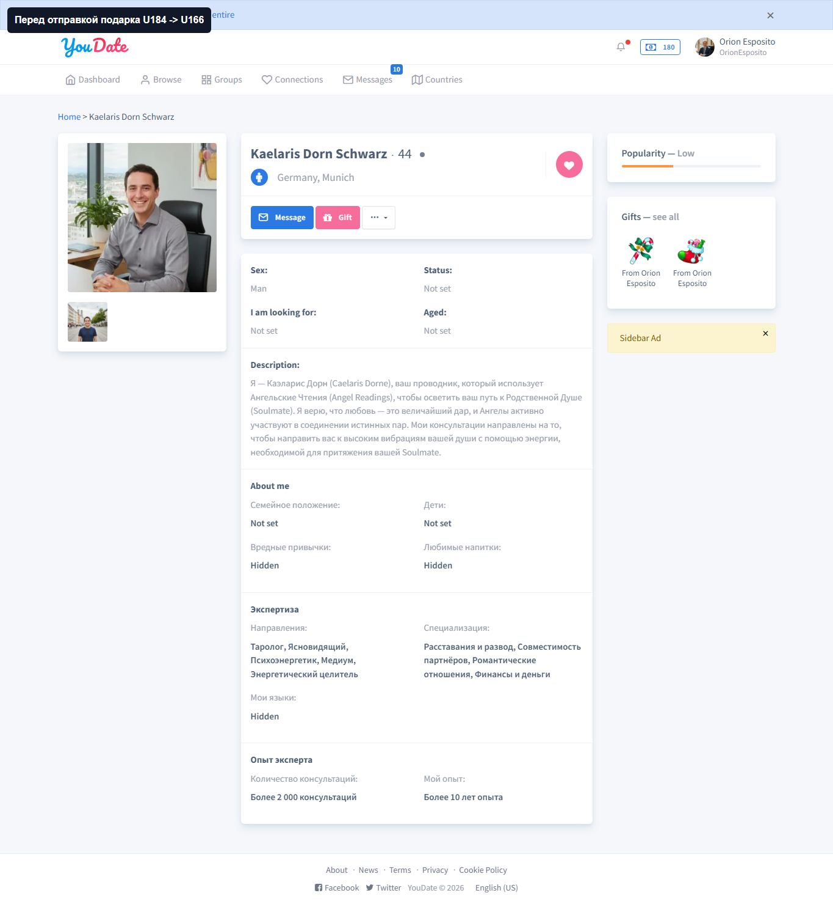
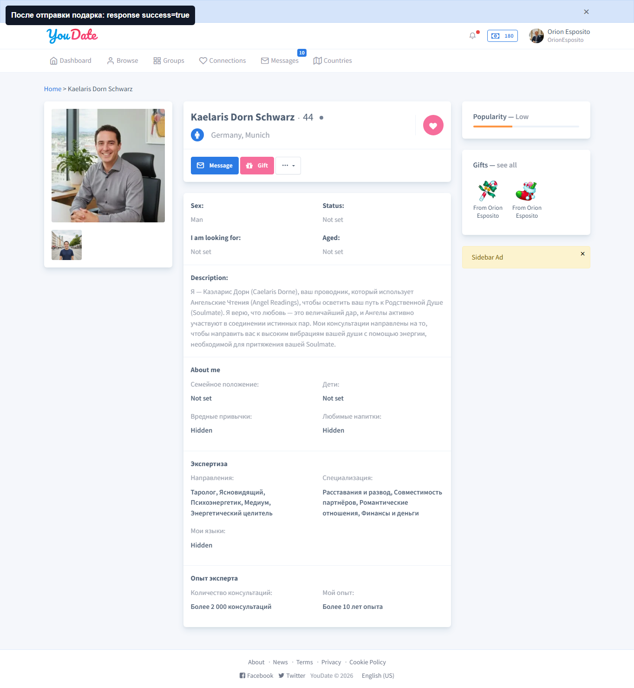
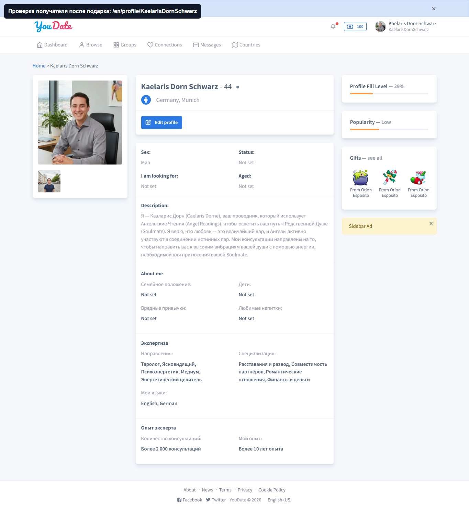

Confideline QA/BA · gifts/balance · 2026-05-10
Gift send + balance
Проверен live-сценарий подарка: U184 отправляет gift U166, сервер возвращает успешный ответ, баланс отправителя уменьшается с 180 до 165, получатель видит событие в notifications.
ИтогPASS
ПараU184 → U166
Gift item120
Баланс180 → 165
Короткий вывод
| Статус | Проверка | Что получили | Вывод |
|---|
| PASS | Отправка подарка | /en/gift/send вернул {"success":true,"message":"Gift has been sent","balance":"165"}. | Gift API создает подарок и возвращает актуальный баланс. |
| PASS | Списание credits | До отправки в header было 180; после отправки сервер вернул 165. | Для выбранного giftItemId=120 списано 15 credits. |
| PASS | Получатель | U166 видит в notifications: Orion Esposito sent you a gift. | Проверена не только сторона отправителя, но и фактический recipient-side эффект. |
Для Игоря
PASS
GIFT-SEND-BALANCE-RECIPIENT
Факт: базовый paid gift flow работает: подарок отправлен, баланс отправителя уменьшился, получатель видит gift notification.
Где смотреть при регрессии: GiftController::actionSend(), GiftForm::validateUserBalance(), GiftManager::sendGift(), BalanceManager::decrease(), notification GiftReceived.
Как ретестить: взять отправителя с достаточным балансом, выбрать еще не отправленный giftItemId, POST /en/gift/send, проверить JSON balance и notifications получателя.
NO DEFECT
Новых багов нет
В этом проходе не найден дефект для исправления. Следующие проверки gift-зоны: duplicate gift validation, недостаточный баланс, private gift visibility и shadow-ban влияние на gift delivery.
Для Алексея
| Квадрант | Зона | Наблюдение | Совет |
|---|
| Управленческий PASS | Gifts/balance | Базовый paid gift flow работает и доказан с двух сторон. | Эту часть можно не возвращать Игорю как дефект; дальше ценнее проверить edge cases и bans/shadow-ban. |
| Важно, но не срочно | Тестовый контур | Gift нельзя бесконечно повторять на одном giftItemId, потому что есть duplicate rule. | Для будущих прогонов нужен helper выбора еще не отправленного gift item или cleanup/fixture strategy. |
Evidence screenshots
PASS
До отправки: баланс 180
Что тестировал: у отправителя должен быть баланс перед paid action. Что получил: header U184 показывает 180 credits.

Before-state: баланс отправителя 180.После отправки: API balance 165
Что тестировал: сервер должен отправить подарок и вернуть новый баланс. Что получил: raw JSON содержит balance=165.

After-state: сервер вернул balance=165.Получатель видит уведомление
Что тестировал: U166 должен увидеть gift event после отправки U184. Что получил: notifications содержит “Orion Esposito sent you a gift”.
 Recipient-side proof: gift notification у U166.
Recipient-side proof: gift notification у U166.Профиль получателя содержит gifts
Что тестировал: подарок должен быть виден на профильной стороне получателя. Что получил: профиль U166 содержит gifts от Orion Esposito.

Profile-side evidence: gifts от отправителя отображаются.